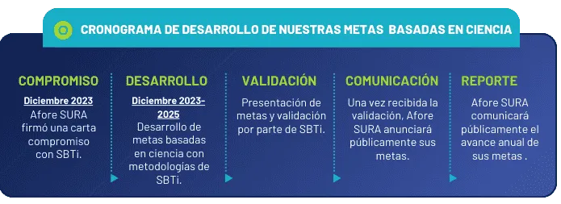
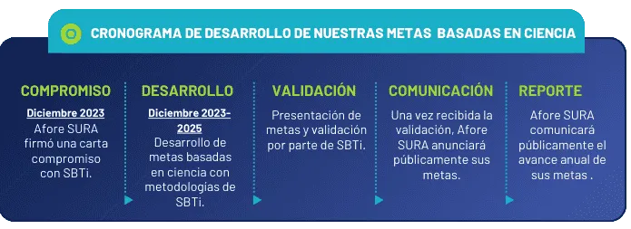
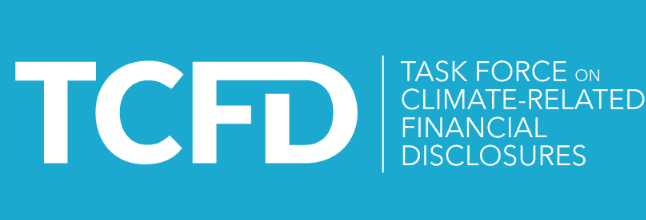

COMPROMISOS
SCIENCE-BASED TARGETS INITIATIVE (SBTi)
En diciembre de 2023 Afore SURA se convirtió en el primer fondo de pensiones en América Latina en comprometerse a definir metas basadas en ciencia frente al cambio climático, de acuerdo con la metodología deScience-based Targets initiative (SBTi)para instituciones financieras.
Este compromiso implica definir objetivos alineados con el Acuerdo de París que limiten el aumento de temperatura global a 1.5°C respecto a niveles preindustriales y a transitar a una economía de emisiones netas cero para 2050, tanto para nuestro portafolio de inversión como para nuestras operaciones.
 
 
También, a partir de nuestro Informe Anual integrado 2023, incorporaremos paulatinamente las recomendaciones delTask Force on Climate-related Financial Disclosures (TCFD).
